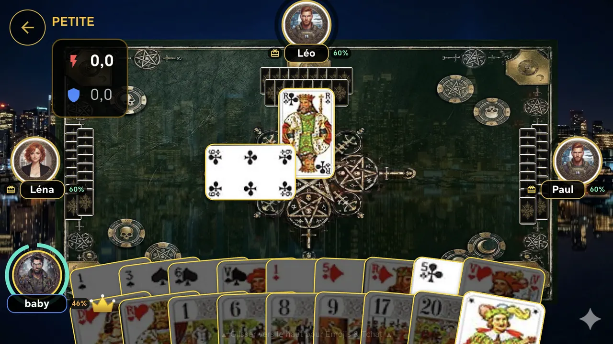

À partir de quelle taille la table grandit
L'application a d'abord été dessinée pour un téléphone tenu en paysage. Quand l'écran dépasse une surface de référence de 1 100 × 620 points, toute l'interface est agrandie d'un même facteur : textes, avatars, cartes et boutons grandissent ensemble et gardent leur disposition.
Le point est l'unité d'affichage d'Android : il dépend de la densité de l'écran, et non du nombre de pixels annoncé sur la boîte. C'est pourquoi deux tablettes de même définition peuvent donner un résultat différent.
| Surface en points | Agrandissement |
|---|---|
| 960 × 600 | aucun : même taille que sur téléphone |
| 1 280 × 800 | environ 16 % |
| 1 366 × 1 024 | environ 24 % |
| 1 600 × 1 000 | environ 45 % |
Sous cette référence, une petite tablette garde la taille d'affichage du téléphone : c'est la place autour des cartes qui augmente. Au-delà, la densité d'affichage est relevée du même facteur, pour que les images et l'accueil en 3D restent nets.
Trois zooms qui se commandent du doigt
L'agrandissement général est automatique. Trois autres se déclenchent en pleine partie, d'un simple toucher :
Votre main
Touchez votre avatar : vos cartes passent à une fois et demie leur taille. Un second toucher les remet à leur taille normale.
Le pli en cours
Touchez le pli au centre de la table : il grandit par paliers de 30 %, trois fois, puis revient à sa taille de départ.
Le dernier pli
Il reste affiché en haut à droite. Touchez-le pour l'agrandir et vérifier quelle carte est tombée.
Quand la main est agrandie, la bande qu'elle occupe en bas reste limitée à 29 % de la hauteur de l'écran, avec un maximum : le pli central reste dégagé.

Vingt-quatre cartes sans en perdre une
Au tarot, la main dépend du nombre de joueurs : 24 cartes à trois, 18 à quatre, 15 à cinq. L'application les range sur deux rangées, triées par couleur : pique, carreau, trèfle, cœur, puis les atouts et l'Excuse.
La partie à trois est la plus exigeante : douze cartes par rangée, et quinze par rangée quand le preneur fait son écart avec le chien en main. Les cartes se resserrent alors juste assez pour que la main reste entière à l'écran, à côté de l'avatar. Plus la tablette est large, moins elles ont besoin de se chevaucher.

Paysage ou portrait : écran par écran
La table se joue en paysage, l'orientation qui laisse le plus de place au pli. D'autres écrans sont plus souples :
- Table de jeu et vidéos : paysage. Les vidéos d'introduction et de fin de partie s'affichent sans être rognées.
- Accueil : portrait ou paysage, au choix.
- Tableau des scores : portrait ou paysage, pour lire le détail d'une manche.
- Chat, hors de la table : portrait ou paysage, pour écrire plus facilement.
Pendant une partie, l'application demande le plein écran : les barres d'Android laissent la place à la table.
Bien s'installer pour une longue partie
- Posez la tablette. Sur un support ou à plat, les deux mains sont libres et la table reste entière sous les yeux.
- Réglez la taille des cartes. Essayez la main agrandie dès la première donne, puis gardez la taille qui vous convient.
- Coupez ou gardez les sons. La musique d'ambiance et le bruit des cartes se règlent séparément dans les réglages.
- Vérifiez la connexion. Le mode Hors ligne désigne les parties en solo contre l'IA, mais Internet reste nécessaire pour les lancer.
Une partie compte trois manches. Pour découvrir les réglages sans enjeu, le plus simple est de jouer contre l'ordinateur : ces parties ne demandent aucun jeton.
Chacun son écran, ou le même compte partout
Commencez sur la tablette du salon, continuez sur votre téléphone : avec un compte, vos jetons et vos amis se retrouvent d'un appareil à l'autre, et aussi sur PC ou dans le navigateur. L'agrandissement des grands écrans existe également sur ces versions.
Une tablette ne se partage pas entre plusieurs joueurs autour de la table : chacun joue sur son appareil. Pour réunir des proches, ouvrez une table privée entre amis ; les places vides sont tenues par l'IA.
Questions fréquentes
L'application jeu de tarot fonctionne-t-elle sur tablette Android ?
Oui. Au-delà d'une surface d'environ 1 100 × 620 points, toute l'interface s'agrandit d'un même facteur. Sur une tablette plus petite, l'affichage garde la taille du téléphone.
Comment agrandir les cartes sur une tablette ?
Touchez votre avatar pour agrandir votre main, le pli central pour l'agrandir par paliers, ou le dernier pli, en haut à droite, pour le revoir en plus grand.
Peut-on jouer au tarot en portrait sur une tablette ?
La table de jeu se joue en paysage. L'accueil et le tableau des scores acceptent aussi le portrait.
Peut-on jouer à plusieurs sur la même tablette ?
Non. Chaque joueur utilise son appareil. Seul sur la tablette, vous jouez contre l'IA ou avec d'autres joueurs en ligne.
Faut-il Internet pour jouer sur une tablette Wi-Fi ?
Oui. Une connexion est nécessaire pour lancer une partie, même dans le mode Hors ligne contre l'IA.
Retrouve-t-on son compte de la tablette sur le téléphone ?
Oui. Connecté au même compte, vous retrouvez vos jetons et vos amis sur vos appareils.
Les autres guides de l'application
Jouer au tarot contre l'ordinateur sur Android
Parties en solo contre l'IA, à 3, 4 ou 5 joueurs : gratuites, sans jetons, avec vos statistiques.
Jouer au tarot entre amis sur Android
Tables privées sur invitation, amis connectés, messages rapides et traduction du chat.
Tout sur l'application
Présentation complète de l'application jeu de tarot Android.
Les règles du jeu elles-mêmes (Bouts, Excuse, contrats) sont expliquées sur jeu de tarot .fr.